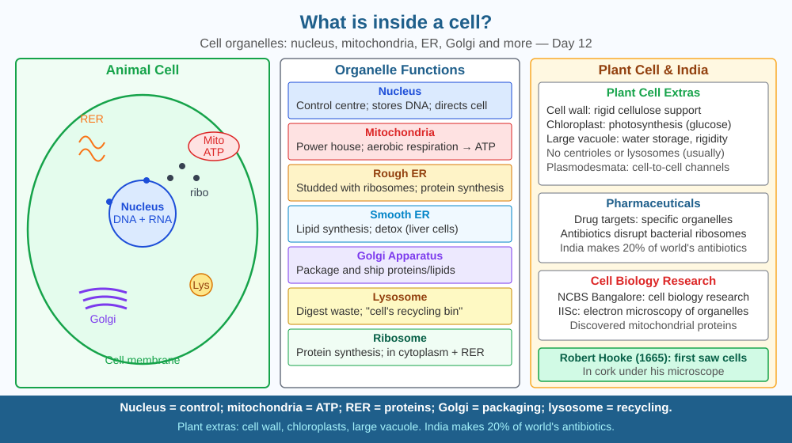

By the end of this lesson, you should be able to identify and describe key cell organelles, explain how they interact, and predict what happens if the cell membrane becomes fully impermeable.
A single cell — invisible to the naked eye — can replicate itself, produce energy, respond to signals, repair damage, and maintain a precise internal chemical environment. It does this with no brain, no planning, using only molecular machines. How?
Cell membrane: Phospholipid bilayer with embedded proteins. Selectively permeable — controls what enters and exits. Lipid core repels water-soluble substances, protein channels allow selective passage.
Nucleus: Double-membrane organelle containing DNA. Nuclear pores allow mRNA out, proteins in. Controls all cellular activities.
Mitochondria: Double membrane. Inner membrane folded (cristae) — site of electron transport chain and ATP production. Has own DNA (evidence of ancient bacterial endosymbiosis). Number varies: liver cells ~2,000, sperm ~100.
Endoplasmic reticulum (ER): - Rough ER: studded with ribosomes → protein synthesis and folding - Smooth ER: lipid synthesis, calcium storage, drug detoxification
Golgi apparatus: "Post office" of the cell. Sorts, modifies, and packages proteins for export (secretion) or internal use. Creates lysosomes.
Ribosomes: Sites of protein synthesis. Translate mRNA code into amino acid chains.
Lysosomes: Contain digestive enzymes. Break down old organelles, bacteria, food particles. If ruptured → cell self-digestion (apoptosis).
Vacuole: Large in plant cells (central vacuole for turgor pressure). Small in animal cells.
Cell wall (plant cells only): Cellulose. Provides rigidity. Prevents excessive osmotic swelling.
Think of the cell as a self-contained factory building:
Remove the security fence (membrane) and the factory dissolves into its surroundings. Remove the director (nucleus) and production eventually stops because no new work orders can be issued.
The included SVG shows a large oval animal cell cut in cross-section. The outer boundary is the cell membrane (labelled, double line in blue), with protein channels shown as darker embedded rectangles. Inside, a large circular nucleus sits near the centre, with a double membrane boundary and small dark dots labelling nuclear pores; the interior is labelled "DNA/chromatin." Radiating outward from the nucleus is a network of rough ER (bumpy orange lines) and smooth ER (smooth orange curves). To the right of the ER sits the Golgi apparatus — a stack of curved flattened sacs (shown in green), with vesicle bubbles budding off its face. Oval mitochondria (purple, inner cristae shown as ridges) are scattered in the cytoplasm. Small black dots labelled "ribosomes" stud the rough ER and float in the cytoplasm. A round lysosome (red) is shown near the Golgi. All organelles are labelled with leader lines, and directional arrows show the protein production pathway: nucleus → rough ER → Golgi → vesicle → membrane.

India's pharmaceutical industry (Sun Pharma, Dr Reddy's) targets specific organelles. Antibiotics target bacterial ribosomes (which differ from eukaryotic ribosomes — that's why antibiotics kill bacteria without harming your cells). Chemotherapy targets rapid cell division — disrupts nuclear DNA or mitosis machinery. India's AIIMS studies mitochondrial diseases — conditions caused by mutations in mitochondrial DNA, inherited maternally. 35 million Indians have diabetes — a disease of cellular glucose uptake (GLUT4 transporters in membranes). Every drug that works does so by interacting with a specific organelle or membrane protein.
Make a model cell using a clear zip-lock bag (membrane), a smaller bag inside (nucleus with twisted string for DNA), cooked spaghetti for ER, grapes for mitochondria, gummy bears for ribosomes. Label each part. The model shows relative positions and the nested structure of membrane-bound organelles within a membrane-bound cell. Once assembled, remove the "nucleus" bag and think: which factory functions would fail immediately, which could continue briefly using mRNA already in the cytoplasm, and which would be unaffected? This exercise maps structure to function rather than just memorising names.
Endosymbiotic theory (Lynn Margulis, 1967): mitochondria were once free-living alpha-proteobacteria engulfed by a host cell ~2 billion years ago. Evidence: mitochondria have their own circular DNA, double membranes, divide by binary fission like bacteria, and their ribosomes are more similar to bacterial than eukaryotic ribosomes. Chloroplasts similarly were cyanobacteria. This merger created the eukaryotic cell — the ancestor of all plants, animals, and fungi. One of the most important events in the history of life.
Predict: If mitochondria truly were once independent bacteria that were engulfed, what would you expect to happen if scientists tried to culture isolated mitochondria in a dish outside the cell? What resources would they need to provide, and what would they still not be able to do that a free-living bacterium can?
Which structure controls all activities of the cell and contains its genetic material?
Correct answer: A
Why is understanding how cell organelles interact more useful than listing them separately?
Correct answer: C
If the cell membrane were made completely impermeable, what would you predict?
Correct answer: B
A liver cell and a muscle cell both come from the same person and contain identical DNA. Yet the liver cell has ~2,000 mitochondria and a large smooth ER for detoxification, while the muscle cell has highly organised myofibrils and many glycogen granules.
Explain in three steps: (a) how two cells with identical DNA can have such different structures; (b) why the liver cell specifically needs a large smooth ER (name the process it performs); and (c) predict what would happen to a liver cell if its Golgi apparatus were chemically destroyed — which of its functions would fail first and why, naming the specific molecule type that would accumulate in the wrong location.
The cell membrane is not a static fence — it is a fluid mosaic that flows and reshuffles constantly at body temperature. Proteins drift laterally across its surface like boats on a lake. If you cool a cell enough, the membrane solidifies and all transport stops — the cell behaves as if impermeable. This is precisely how refrigeration preserves organs for transplant: the cold slows membrane traffic to a near halt, buying surgeons hours that would otherwise be minutes.
A cell is not a bag of chemicals — it is a precisely organised factory where each organelle performs a specific job, and removing any one component disrupts the entire production chain.